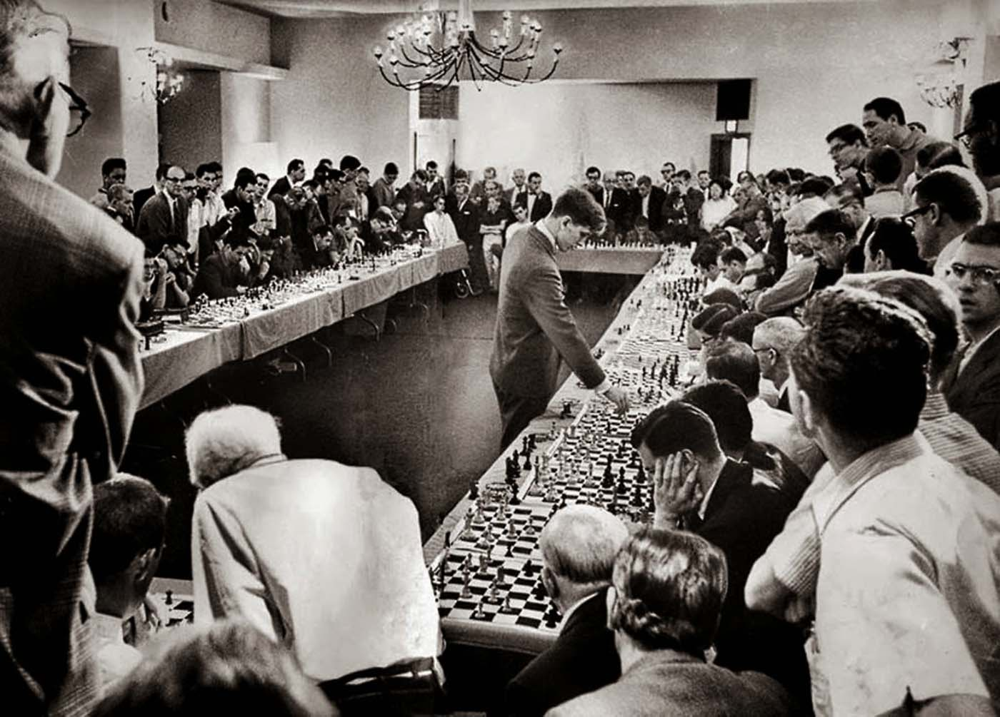

|

|
|
|
��On n'a jamais que l'âge auquel on a commencé à jouer aux échecs, car aprés on cesse de vieillir. � | ||
Je suis devenu entra�neur professionnel en 2004 et je continue depuis d�exercer ce m�tier avec la m�me envie de partager, de transmettre et d�inspirer.
J�ai cr�� cette page avec l�objectif de vous donner des �l�ments pour bien commencer aux �checs et vous rep�rer.
Des conseils et ressources pour vous entra�ner, avoir une vue globale sur les diff�rents secteurs du jeu et l�importance que je vous conseille d�y accorder.
��Il y a plus d�aventures sur un �chiquier que sur toutes les mers du monde � disait Patrice de Mac-Mahon, et l�une de vos plus pr�cieuses qualit�s sera la patience !
Et son alli�e de choix : la curiosit�.
Sur cette page, cr��e en 2021, je mets � votre disposition gracieusement de nombreux liens, des documents que j�ai construits au fil de mes ann�es d�entra�neur et je vous fais partager mon exp�rience. J�esp�re que cela vous sera utile.
Tous vos retours sont les bienvenus.
Acc�s rapide :
R�gles et premiers conseils
Quelques points de rep�re
R�partir son entra�nement
La tactique
La strat�gie
Les parties miniatures
Les finales
Les ouvertures
Les m�thodes d�attaque sur le Roi
L�ordinateur
La psychologie
Quelques livres
Quelques cha�nes
Mes autres projets actuels :
Championnats du monde
Vid�os Le conseil de la semaine
Par exemple avec les petites vid�os du club de St-L�.
La vid�o Europe �checs d�Andreea
Ce document PDF : R�gles du jeu
Bien commencer (documents PDF du club EDL) :
Premiers conseils | Les parties nulles | La notation | Feuille de partie
Les modules Apprendre les �checs de Lichess
- Ouvertures (d�buts de partie)
- Tactique (calcul, combinaisons)
- Strat�gie (organisation, placement, planification)
- Finales (fins de parties)
Phases de progression d�un joueur :
1) Phase mat�rielle (�tre concentr� sur le mat�riel, le d�placement des pi�ces et les captures)
2) Phase spatiale (prendre conscience des cases, du contr�le des cases, d��l�ments g�om�triques)
3) Phase temporelle (prendre conscience des gains/pertes de temps, quand faire quoi, quand agir vite ou non)
��Les �checs ont trois composantes : le temps, l�espace et le mat�riel en dernier. �
Mikhail Tal, 8e champion du monde
Crit�res d��valuation d�une position (par ordre d�importance) :
1) S�curit� du Roi (le mat met fin � la partie)
2) Mat�riel (un surnombre aide � gagner)
3) Activit� des pi�ces (quand les joueurs font assez attention aux crit�res 1 et 2, cela sera souvent d�cisif)
4) Structure de pions (et ses cons�quences, en particulier les pions faibles)
Recommandations importantes pour progresser :
- Jouez, jouez et jouez
- Analysez vos parties (seul, sans l�ordinateur puis avec, et si possible avec un entra�neur ou un joueur exp�riment�)
- Multipliez les exercices de calcul (tactiques principalement, cela peut aussi �tre dans des finales et des �tudes)
- Regardez des parties (en direct, comment�es, etc.)
Mon document Comment analyser ses parties
Conseils pour jouer sur internet :
- pr�f�rez jouer avec un incr�ment, qui donne la prime au jeu sur la pendule
- utilisez une cadence d�au moins 10 minutes, si possible 15 voire plus. Il est difficile de construire une vraie partie d��checs avec moins de temps
- il est bon de jouer beaucoup mais essayez de privil�gier la qualit� sur la quantit� : mieux vaut moins de parties mais mieux soign�es et avec des cadences plus longues, que vous analyserez pour en retirer des enseignements
Mon document Jouer sur Internet
Exemple de r�partition d�entra�nement pour un joueur qui d�bute :
- Ouvertures 10 %
- Tactique 50 %
- Strat�gie 25 %
- Finales 15 %
Remarques :
- on peut mal commencer une partie mais se r�tablir en milieu de partie ou fin de partie, tandis que si on se trompe dans la finale, il y a nettement plus de chances que cela nous co�te la partie. C�est pourquoi je pense que vous devriez d�dier plus de temps aux finales. L�avantage est que ce que vous apprenez en finales ne changera pas dans le temps et vous servira toujours, ce qui vous permettra ensuite de d�dier plus de temps aux autres secteurs, notamment la strat�gie et les ouvertures.
��Un joueur peut parfois s�offrir le luxe de commettre une impr�cision, voire une erreur pendant l�ouverture ou le milieu de jeu, sans n�cessairement perdre la position. Dans une finale� une erreur peut �tre d�cisive et les secondes chances se pr�sentent rarement. �
Paul Keres
- il est possible de travailler le secteur des ouvertures en faisant un lien avec le milieu de jeu, en �tudiant les plans correspondants et des parties de tournoi. Dans ce cas il y a un travail � la fois d�ouvertures et de strat�gie.
- notez que quand vous analysez vos parties, vous travaillez potentiellement sur les 4 secteurs du jeu.
Exemple de r�partition d�entra�nement pour un joueur avec 2 ans d��checs :
- Ouvertures 20%
- Tactique 30%
- Strat�gie 30%
- Finales 20%
� Pour me battre, il faut me battre trois fois : une fois dans l�ouverture, une fois dans le milieu de jeu, et une fois en finale. �
Alexandre Alekhine, 4e champion du monde
Principaux tableaux de mat (les plus fr�quents en premiers) :
- Mat du couloir
- Baiser de la mort
- Mat de l�escalier
- Mat � l��touff�e
- Mat arabe
- Mat d�Anastasie
- Mat du Gu�ridon
- Mat de Lolli
- Mat de Greco
- Mat du crochet
- Mat de Blackburne
- Mat de Boden
- Mat de Damiano
- Mat des �paulettes
- Mat de Pillsbury
- Mat de Morphy
- Mat de l�op�ra
Dans l�ouverture :
- Mat du Lion
- Mat du Berger
- Mat de Legal
Mon document PDF 24 tableaux de mat
La page de ChessTempo Th�mes Tactiques et tableaux de mat
Les Modules d�entra�nement de Lichess
��Pour moi, les �checs ne sont pas un jeu mais un art. �
Alexandre Alekhine, 4e champion du monde
Principaux th�mes tactiques (les plus fr�quents en premiers) :
- Double attaque / fourchette
- Clouage
- Attaque � la d�couverte
- Eliminer le d�fenseur
- Coup interm�diaire
- Enfilade
- Pi�ce coinc�e
- D�viation
- Attraction
- Interception
- D�gagement
- Obstruction
- Rayons-X
- Zugzwang
Remarque : le zugzwang est un th�me particulier que l�on pourrait placer ailleurs.
La page de ChessTempo Th�mes Tactiques
Vous pouvez travailler la tactique en ligne, par exemple sur le site ChessTempo, sp�cialis� pour cela, ainsi que sur de nombreux autres sites, sur des applications et avec des livres.
Les Modules d�entra�nement de Lichess
Le site ChessPuzzle.net
Ma playlist de 3 vid�os de d�clinaisons tactiques
La m�thode par �tapes
Un moyen privil�gi� de travailler, que je recommande, c�est les livrets � 5� de la M�thode par �tapes �labor�e par des entra�neurs hollandais il y a une vingtaine d�ann�es, tr�s utilis�e partout dans le monde, et dont la qualit� p�dagogique est exceptionnelle. Chaque livret de 50 pages contient plusieurs centaines d�exercices, principalement tactiques.
Si vous �tes animateur / entra�neur, je vous recommande fortement ces livrets pour vos �l�ves et les livrets de l�entra�neur pour vous-m�me.
� La tactique, c�est ce que vous faites quand il y a quelque chose � faire ; la strat�gie, c�est ce que vous faites quand il n�y a rien � faire. �
Xavier Tartacover
- la s�curit� du Roi
- l�activit� des pi�ces (incluant bon/mauvais Fou)
- les �changes
- l�espace
- la case forte/faible
- la colonne ouverte
- l�avance de d�veloppement
- les roques oppos�s
- l��valuation d�une position
- le centre de pions
- l�ouverture des lignes, le levier
- la r�action centrale
- l�initiative
- la 7�me rang�e (vid�o)
- la centralisation
- la prophylaxie
- les majorit�s de pions
- l�avant-poste (et ses diff�rentes d�finitions)
- la paire de Fous
- le pion arri�r�
- les pions faibles
- la faiblesse sur une couleur
- les attaques de Fous de couleurs oppos�es (vid�o)
- le principe des deux faiblesses
- le pion isol� central
- l�attaque de minorit�
- le pion pass� (utilisation et blocage)
La strat�gie est tout autant au coeur du jeu que la tactique.
La page de ChessTempo Th�mes Strat�giques
Il existe de nombreux livres r�put�s sur la strat�gie. En voici deux : M�rir son style aux �checs de Silman (pas facile � trouver et (donc) plus cher que la moyenne) et Strategy for clubs players de Grooten.
Je vous conseille �galement les deux livres Principes fondamentaux de la strat�gie de mon coll�gue Marc Quenehen.
J�en profite pour recommander un tr�s bon livre qui traite aussi bien de la tactique, de la strat�gie et des finales : Une boussole sur l��chiquier de Xavier Parmentier.
De nombreux th�mes strat�giques ont �t� trait�s en vid�o dans les Masterclass de la FFE qui sont en acc�s libre, avec documents associ�s (m�mo, exercices, base PGN).
L�index par th�mes
Et dans ma playlist vid�os de parties d�amateurs
Les �tudier est un moyen int�ressant de travailler les th�mes Avance de d�veloppement, S�curit� du Roi, Ouverture des lignes, en m�me temps que des motifs tactiques, tout en voyant diff�rentes ouvertures.
Mon document 32 miniatures | Ma playlist vid�os de miniatures
��90% des variantes d�un livre d�ouverture n�ont pas de r�elle utilit�. En effet, soit elles contiennent des erreurs, soit elles sont bas�es sur des hypoth�ses fallacieuses. Oubliez donc simplement les ouvertures et consacrez votre temps � l��tude des finales. �
Jos� Ra�l Capablanca, 3e champion du monde
L��tape n�1 est de savoir mater un Roi seul avec des pi�ces lourdes (Dame et Tour):
- mat de l�escalier (avec Dame et Tour et avec deux Tours) | Vid�o
- mat avec la Dame (Roi et Dame contre Roi) | Vid�o
- mat avec la Tour (Roi et Tour contre Roi)
L��tape n�2 consiste � assimiler les positions th�oriques fondamentales.
Je vous conseille de commencer par la finale Roi et pion contre Roi. (en vid�o ici)
Puis par des finales de pions en g�n�ral (sans aller trop loin dans la difficult�).
Les finales de Tours les plus �l�mentaires.
La finale Dame contre pion en 7�me rang�e. (en vid�os ici ou l�)
Quelques positions de finales de Fous et de Cavaliers.
Les nulles th�oriques fondamentales.
L��tape n�3 est d�assimiler les grands principes de finales :
- l�activit� du Roi
- la Tour en 7�me rang�e
- en avance mat�riel on �change les pi�ces mais pas les pions
- le pion pass� est fait pour �tre pouss�
- le pion candidat en avant
- la Tour derri�re le pion pass�
- les diff�rents types de pions pass�s
- ne pas se presser
- les forteresses
Rejouez les finales de grands joueurs et analysez vos propres finales.
Je vous conseille d�acqu�rir au moins un livre de finales. Parmi les r�put�s : La m�thode Silman pour ma�triser les finales aux �checs (Silman), Entra�nement aux finales (Bernd Rosen). Un peu plus compliqu�s : Fundamental Chess Ending (Muller et Lamprecht) et Les 100 finales qu�il faut conna�tre (de la Villa).
Les Modules de finales de Lichess
Le Module de finales de Chesstempo (2 gratuites par jour)
Ma playlist vid�os de finales
De nombreuses finales ont �t� trait�es en vid�o dans les Masterclass de la FFE qui sont en acc�s libre, avec documents associ�s (m�mo, exercices, base PGN).
L�index par th�mes
Il est normal de se poser ces questions-l� et la premi�re est m�me totalement l�gitime. Mais je dois ici commencer par deux avertissements :
1) Ne vous fixez pas comme objectif de faire tomber votre adversaire dans des pi�ges. A court terme cela vous fera gagner des parties, surtout contre des joueurs peu exp�riment�s, mais � long terme cela vous fait perdre du temps et peut vous �loigner d�une approche qui vous serait plus profitable � moyen et long terme, notamment au niveau de votre compr�hension du jeu.
Cela ne veut pas dire que vous ne pouvez pas retenir un pi�ge ici ou l�, en passant, mais ne jouez pas pour les placer � tout prix, votre objectif doit avant tout �tre de jouer des bons coups. Si un bon coup tend un pi�ge, pas de souci, mais s�il faut jouer un coup douteux ou mauvais pour cela, c�est dommageable. Un bon exemple est le mat du berger. Si votre adversaire ne le conna�t pas il peut se faire mater, mais s�il le conna�t vous vous retrouvez en mauvaise position avec votre Dame sortie.
J�irais m�me plus loin : m�me si votre pi�ge fonctionne et vous fait gagner la partie d�s le d�but, je trouve que c�est dommage : qu�avez-vous appris de cette partie ? Probablement rien. Comment allez-vous progresser dans ces conditions ?
��Votre seul travail dans les ouvertures est d�obtenir un milieu de partie jouable. �
Lajos Portish
Le grand entra�neur Mark Dvoretsky �crivait qu�il entendait souvent des �l�ves qui lui disaient qu�ils travailleront le reste quand ils auront fini leur r�pertoire d�ouvertures. Il leur r�pondait qu�on n�a jamais fini son r�pertoire !
M�fiez-vous, on peut vraiment se noyer dans ce secteur, travaillez-le avec parcimonie.
Conseils :
- essayez de travailler non pas seulement les coups d�ouvertures mais surtout les id�es de ces coups
- essayez de travailler vos ouvertures en fonction de leur structure de pions, c�est une approche qui vous fera travailler la strat�gie, les plans, et qui vous servira potentiellement dans d�autres ouvertures (un excellent livre pour cela : Les structures de pions aux �checs de Flores Rios)
- regardez des parties de tournois ayant �t� jou�es avec votre ouverture (par exemple sur le site ChessTempo rubrique Base de donn�es). A ce sujet, je vous conseille de regarder les toutes premi�res parties jou�es dans l�histoire avec votre ouverture, souvent des parties de la fin du 19e si�cle ou d�but du 20e. Ces parties sont plus faciles � comprendre que les parties plus modernes. Cherchez �galement des parties de champions des diff�rentes �poques, et �ventuellement des sp�cialistes (joueurs qui l�ont souvent utilis�e).
- cherchez un ou deux bons livres sur vos ouvertures principales, c�est s�rement encore � ce jour la meilleure fa�on de bien travailler une ouverture. Pour les autres vous pouvez chercher des vid�os qui expliquent (demandez-vous juste bien qui fait la vid�o, est-ce au moins un entra�neur exp�riment� ?).
� propos de cacher ses ouvertures
C�est quelque chose que j�entends �norm�ment. Je comprends tout � fait le d�sir de pr�server quelque chose qu�on a pass� du temps � travailler mais c�est au pire une illusion, et au mieux une mauvaise approche. J�en ai souvent parl� avec d�autres entra�neurs.
Croyez-vous que la meilleure fa�on d�am�liorer votre r�pertoire / votre ouverture soit de la laisser dans un placard ou de la tester au grand jour ? Bien s�r en la testant, et parfois en se prenant des coups auxquels on ne savait pas r�pondre. C�est en exposant vos ouvertures que vous les renforcerez, pas le contraire !
Je vous recommande m�me l�approche oppos�e : si vous pr�voyez un match d�entra�nement avec un joueur, donnez-lui votre ouverture et dites-lui de se pr�parer contre ! Ce sera pour vous (et pour lui) beaucoup plus int�ressant et instructif que s�il ne savait pas quoi jouer dessus. Chacun am�liore ainsi son r�pertoire, ses connaissances et son exp�rience.
(tellement plus qu�en jouant 1.g3 pour cacher son ouverture incroyable ;-) )
Construire son r�pertoire
La construction de son r�pertoire est source de nombreuses questions : comment m�moriser, comment choisir ses ouvertures, devrais-je jouer plut�t des grandes variantes ou des sous-variantes, comment travailler une ouverture, devrais-je apprendre un r�pertoire ou plusieurs, quand aurai-je termin� mon r�pertoire, etc.
Voici deux documents pouvant vous aider � y r�pondre :
- mon PDF de 4 pages Comment construire son r�pertoire
- le chapitre Construire son r�pertoire de la masterclass FFE avec le MI Xavier B�douin
Deux livres (parmi d�autres !) qui me viennent en t�te � ce sujet : L�art de l�attaque de Vukovic et L��cole des �checs le tome 2 de Kotov.
Voici quelques m�thodes :
- attaquer le Roi au centre (case f7, diagonale h5-e8 / a4-e8, colonnes centrales)
- sacrifice Fxh7+ (Calabrais ou cadeau grec)
- double sacrifice de Fous (Lasker-Bauer, Nimzowitsch-Tarrasch, etc.)
- attaque sur h7
- attaque sur g7
- ouverture des lignes (colonnes, diagonales, levier de pion)
- l�assaut de pions
- la Tour qui coulisse horizontalement
- attaquer un fianchetto
- attaquer un grand roque
- l�extraction du Roi
- les conditions pour attaquer / sacrifier
��Mais qu�importe ce que vous direz et ce que je dirai, une machine pouvant jouer aux �checs avec autrui est l�une des plus belles merveilles de notre 20� si�cle ! �
David Bronstein, vice-champion du monde 1951
- Pour progresser aux �checs, votre cerveau doit s�habituer � reconna�tre les bons et les mauvais sch�mas de lui-m�me, il doit s�habituer � produire les raisonnements �chiqu�ens, cela demande du temps et de l�autonomie�: soit tout le contraire de ce qu�on obtient quand on regarde ce que propose l�ordinateur puisqu�il donne la ��r�ponse�� 1) instantan�ment et 2) c�est lui qui travaille, pas notre cerveau.
D�ailleurs au passage je rappelle que Magnus Carlsen, le champion du monde actuel, a tr�s peu utilis� l�ordinateur au cours de sa formation �chiqu�enne et on pourrait dire la m�me chose de la majorit� des super GM actuels.
Quelques conseils :
- m�fiez-vous de ce qu�il dit dans l�ouverture, quand vous le pouvez utilisez plut�t les biblioth�ques d�ouvertures, qui contiennent les coups jou�s par des humains dans les tournois (un coup qui a �t� jou� des milliers de fois par des tr�s bons joueurs est 10 fois plus digne de votre confiance)
- m�fiez-vous de son �valuation, qui de nos jours peuvent monter tr�s haut dans des positions encore peu claires pour un oeil humain, et qui peuvent laisser croire que c�est "facilement" gagnant
- m�fiez-vous de certaines �valuations en finales, �tant donn� qu�elle n�int�gre quasiment pas les positions de nulle th�oriques ni la notion de forteresse (utilisez les tables de finales si possible)
- m�fiez-vous des coups propos�s par l�ordinateur, lui calcule des millions de coups par seconde et peut se permettre des choses que des humains ne devraient pas faire. Faites-lui surtout confiance quand il s�agit de coups tactiques clairs (attaque de mat, gain de mat�riel) et utilisez votre esprit critique en relation avec les principes �chiqu�ens
- d�sactivez l�ordinateur pour analyser et habituer votre cerveau � r�fl�chir par lui-m�me, puis comparez le fruit de vos analyses avec ce que propose l�ordinateur
Bonus :
- n�oublions pas qu�en 2018 AlphaZero a battu Stockfish 155 victoires � 6 dans un match en 1000 parties
- allez voir le projet MaiaChess qui cherche � imiter le jeu humain
Ma vid�o qui traite de ces questions :
��Les �checs mettent en conflit, non pas deux intelligences, mais deux volont�s. �
Emanuel Lasker, 2e champion du monde
��Les �checs sont 30 � 40% psychologiques. Cette dimension dispara�t quand on affronte un ordinateur. �
Judith Polgar, plus forte joueuse de l�histoire
Cha�ne Mentor your chess du MI et entra�neur Alain Genzling
Articles des GMI et entra�neurs du site ChessMood (anglais)
Cha�ne du GMI et entra�neur RB Ramesh (anglais)
Attention � la maladie du joueur d��checs : acheter plein de livres et ne pas les lire :)
|
Coups de coeur La M�thode par �tapes Une boussole sur l��chiquier (Xavier Parmentier) Les sept p�ch�s capitaux aux �checs (Rowson) La collection Vive les �checs de Philippe Pierlot Joys of chess (Christian Hesse) Le nouveau guide des �checs (Giffard/Bi�nabe) |
Finales La m�thode Silman pour ma�triser les finales aux �checs Entra�nement aux finales (Bernd Rosen) Fundamental Chess Ending (Muller et Lamprecht) Les 100 finales qu�il faut conna�tre (de la Villa) La strat�gie dans les finales (Cherechevski) Le manuel des finales (Dvoretsky) |
Classiques Des �checs � l�infini (Karpov/Guik) L�art du combat, Zurich 1953 (Bronstein) Combinational motifs (Blokh) Mes grands pr�d�cesseurs (1-2-3-4-5) (Kasparov) L�art de jouer les pions (Hans Kmoch) The art of attack (Vukovic) |
|
Strat�gie M�rir son style aux �checs (Silman) Strategy for clubs players (Grooten) Principes fondamentaux de la strat�gie (Marc Quenehen) Les secrets de la strat�gie moderne aux �checs (Watson) |
Ouvertures Ma�triser les ouvertures (1-2) (Watson) Comment construire son r�pertoire d�ouvertures (Steve Giddins) Jouez 1.e4 (1-2) (Shaw) |
Divers Build up your chess (1-2-3) (Yusupov) Exercices de strat�gie (Bricard) 50 id�es strat�giques (Terekhin) Les secrets de l�initiative (Xavier Parmentier) S�entra�ner aux �checs Jesper Hall |
Est souvent fortement conseill� aussi : Comment battre papa aux �checs (Chandler).
Il existe �videmment �norm�ment de bons livres et je ne peux tous les citer.
Ecrivez-moi si vous pensez qu�un excellent livre que j�ai oubli� m�rite de figurer.
J�en avais mis d�autres sur cette page.
Un �diteur de livres d��checs en fran�ais : Olibris
Voici quelques cha�nes perso qui valent le d�tour :
K�vin Bordi : Youtube / Twitch
Apprendre les �checs en 24h : Youtube / Twitch
Vincent Denis : Youtube
Diagonale TV / Imin�o : Site / Youtube
Igor Nataf : Youtube / Twitch
Andreea Navrotescu : Youtube / Twitch
64 cases : Youtube
H�l�ne Ruhlmann : Youtube
Pierre Calendini : Twitch / Youtube
Luc Pitallier : Youtube
Echecs et Maths Faciles : Youtube
ChessMI : Youtube
Sylvain Ravot : Youtube
Ecrivez-moi si vous pensez qu�une excellente cha�ne que j�ai oubli�e m�rite de figurer.
En anglais (parmi d�autres !) :
ChessMood
Chessbase India avec Sagar Shah
Saint Louis Chess Club
Daniel Naroditsky
Quelques sites offrant des ressources (en partie payantes) :
Europe �checs
Chess.com
Chess24.com
Chessgames
Chesstempo
Chessable
Et bien s�r, pour structurer tout �a, n�h�sitez pas � prendre des cours avec un entra�neur exp�riment� ;-)
Auteur de cette page : Sylvain Ravot
| Commander des masterclass |
|